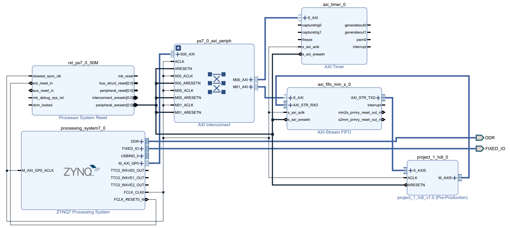
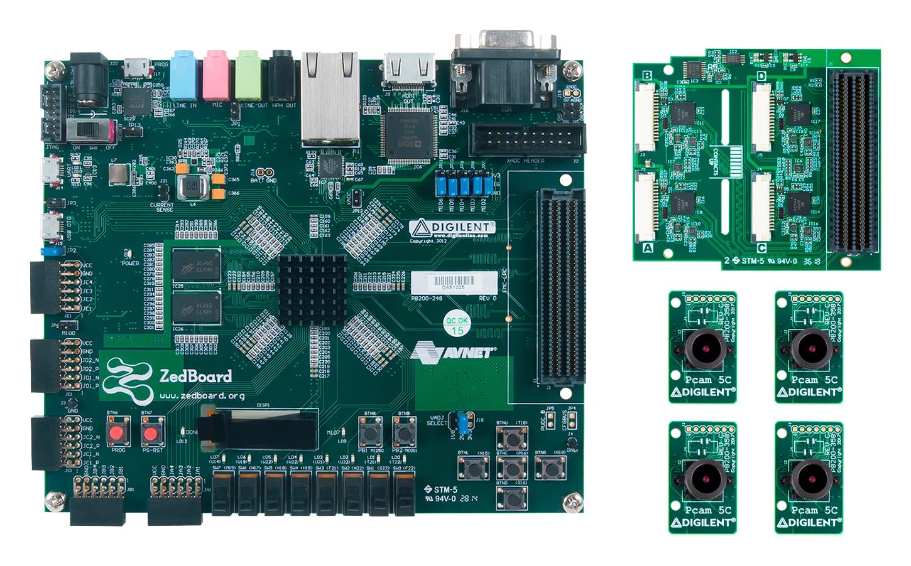
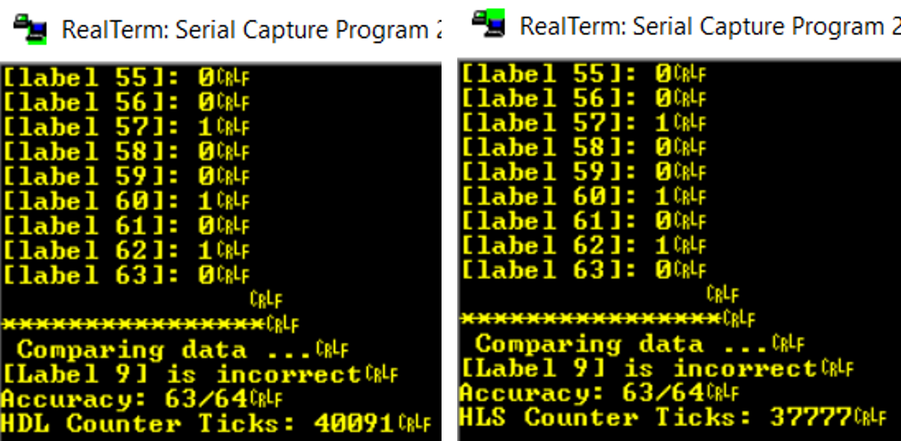
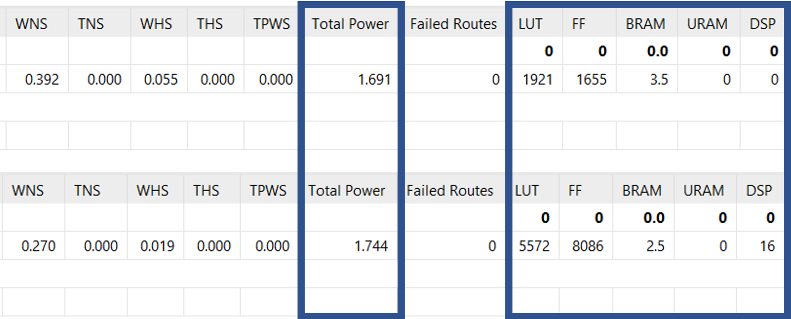

Overview
We were tasked to create a hardware accelerator for a multilayer perceptron (MLP) neural network. The MLP consists of at least 3 layers: the input layer, the hidden layer, and the output layer. For more information, please read it here.
In our proposed solution, we are using a Xilinx ZedBoard Zynq-7000 ARM/FPGA for the hardware acceleration. We are also using the AXI-Stream FIFO to move data across different Intellectual Property (IP) blocks as shown below.
(System Block Design)
For the hardware, we are utilising both High-Level Synthesis (HLS) and Verilog tools to generate the bitstream for our hardware.
Project Components
(Zynq ZedBoard)
- Zynq ZedBoard: hardware accelerator
Proof of Concept
We stream data in from the computer using a USB cable and a serial terminal such as RealTerm. We did two rounds of testing:
- HLS
- Verilog
to compare the number of clock cycles needed to complete the computations.
(From left to right: Verilog timer ticks, HLS timer ticks)
Unfortunanately, our Verilog version performed slightly worse than the HLS version by about 5%. However, upon closer inspection, it was clear to us that the 5% difference is due to the difference in hardware utilisation. In the Verilog code that was written, there are significant cost and power savings for the same work done.
(From top to bottom: Verilog design run, HLS design run)